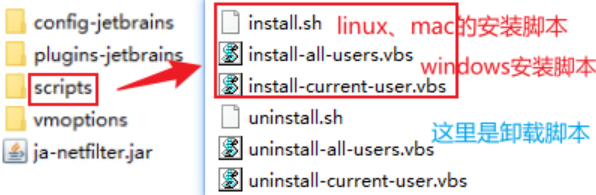

JetBrains全家桶下载链接
https://www.jetbrains.com/products/步骤
一、安装
二、下载破解插件
破解插件链接 点我下载
三、安装破解插件
1、卸载其他插件
因为不同的激活插件之间可能会出现互相干扰的情况，如果之前安装过历史版本或使用过其他插件，建议先卸载之前的激活插件，安装安装本教程中的激活插件，避免互相干扰，影响激活效果。
如果可以，建议百度"彻底卸载IDEA"，可以将历史版本的IDEA彻底卸载，并将用户路径下的历史版本的配置文件全部清理掉。
2 下载并解压插件
从上方的链接下载插件，为了避免路径问题，请将下载的插件包解压到本地一个没有中文以及特殊符号的路径下。
3、安装插件
找到 scripts 目录，根据你使用的电脑系统，找到对应的安装脚本。
*.sh 是 Mac 和 Linux 的脚本，*.vbs 是 Windows 的脚本。
windows安装插件
双击 install-all-user.vbs 脚本
出现 done 弹框，说明成功！安装过程因电脑而异，有的很快，有的需要等几秒，最慢的甚至出现过几分钟才出来的，如果执行之后没有出现，请耐心等待一下。
mac/Linux安装插件
cd 你本地保存的目录 sh ./install.sh
出现以下提示，说明安装成功
done. the "kill Dock" command can fix the crash issue.
如果提示权限不足，请授予目录可执行权限
4、重启电脑
由于存在环境变量配置，插件安装之后，需要重启电脑才会生效。
5、使用激活码
第一步、重启IDE并获取激活码
注意，每个工具都有专属激活码，不要弄混了。
AppCode 点我复制
Clion 点我复制
DataGrip 点我复制
DataSpell 点我复制
DotCover 点我复制
DotMemory 点我复制
DotTrace 点我复制
GoLand 点我复制
Idea 点我复制
PhpStorm 点我复制
PyCharm 点我复制
Rider 点我复制
RubyMine 点我复制
WebStorm 点我复制
第二步、打开激活界面
第三步、输入激活码
出现 key is invalid 就是插件没生效（可能是插件安装了之后没重启电脑）
第四步，激活成功
免责声明
文中资源均收集整理于网络，仅供个人学习和交流使用，严禁用于任何商业行为，您必须在下载后的24个小时之内从您的电脑中彻底删除内容；版权争议与作者无关，所有资源仅供学习参考研究目的，如果您访问和下载此文件，表示您已经同意只将此文件用于参考、学习而非其他用途，否则一切后果请您自行承担；侵删...